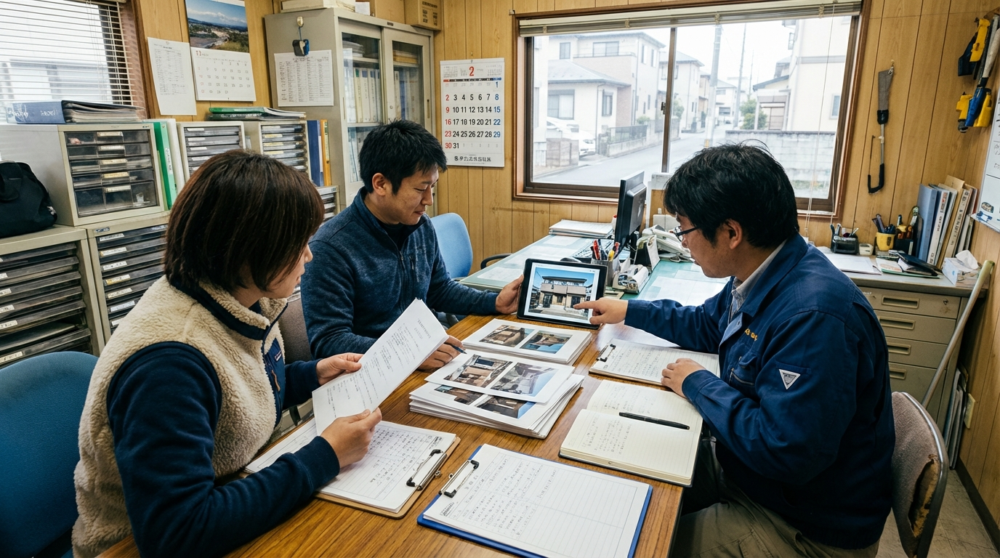
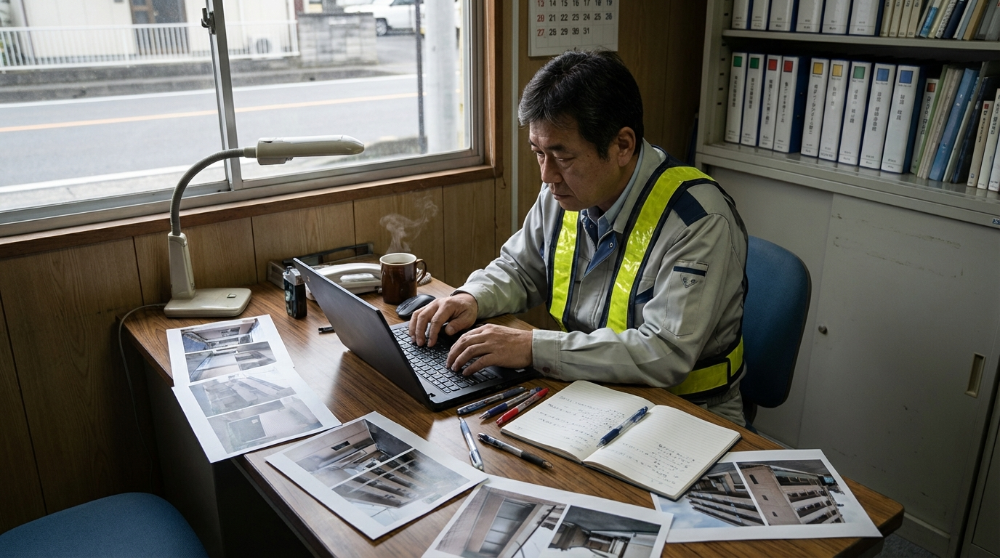

作業報告が後回しになる
巡回や清掃が終わってから文章化するため、共有が遅れやすい。

清掃・メンテナンスの AI 活用・業務改善
点検報告・顧客連絡・進捗共有を、現場で回る形に整える伴走型 AI コンサル
AI-SABI が、課題整理から活用方針、ツール選定、連携・自動化設計、定着支援まで伴走し、清掃・メンテナンスの業務改善を現場に合う形で進めます。点検報告、顧客連絡、進捗共有など、成果が見えやすい業務から整え、必要に応じて半自動化や自動化候補まで設計します。
清掃・メンテナンスで起きやすい課題
巡回や清掃が終わってから文章化するため、共有が遅れやすい。
異常箇所や対応内容のまとめ方が属人化し、品質差が出やすい。
写真ごとに説明を考えるため、報告作成に工数がかかる。
注意喚起や完了連絡の書き方が担当者ごとに変わり、確認や修正が発生する。
清掃・メンテナンス目線で変える 4 ステップ
点検報告、顧客連絡、進捗共有など、どこが重いかを整理します。
最初に効果が見えやすい 1 業務を決めます。
下書き支援、要約、一次対応、共有、ツール連携まで、どこまで任せるかを設計します。
清掃・メンテナンスの実務フローに合わせて調整し、使い続けられる状態まで伴走します。
清掃・メンテナンス目線で変える業務
清掃・メンテナンス目線で選ばれる 3 つの理由
小さく始めやすい
最初から全業務を変えるのではなく、改善効果が見えやすい点検報告や連絡文から着手します。だから、現場でも無理なく取り入れやすくなります。

活用範囲まで設計する
業務ごとに、AI の下書き支援で止めるか、要約・共有・一次対応を半自動化するか、条件が合う周辺業務は自動化まで進めるかを切り分けます。そのため、現場に合わない過剰導入を避けながら改善できます。
定着まで伴走する
点検報告や共有文の型を育てながら改善し、担当者が変わっても回る状態まで伴走します。そのため、属人化を減らしながら使い続けやすくなります。
運用イメージ
Case 01
Case 02
こんな相談から始められます
巡回後の整理を軽くしたい。
担当者ごとの差を減らし、確認しやすくしたい。
現場ごとの注意点を残しやすくしたい。
他サービスとの違い
| AI-SABI | 汎用 AI ツール導入 | 外注代行 | |
|---|---|---|---|
| 対象業務の決め方 | ○ 点検・作業報告・連絡文から優先順を整理 | △ 使い道は担当者判断に寄りやすい | △ 要件整理が先に必要 |
| 活用範囲の設計 | ○ 下書き支援から自動化候補まで切り分ける | △ 単発利用で止まりやすい | × 自社にノウハウが残りにくい |
| 確認体制 | ○ AI と人の確認分担まで整理 | △ 確認ルールは各自設計 | × 外部依存になりやすい |
| 定着支援 | ○ チームで使う型まで育てる | △ 導入後の浸透に工夫が必要 | × 横展開しにくい |
支援プラン
初期診断
業務改善伴走
定着支援
横展開支援
支援対象業務、伴走期間、必要なサポート内容に応じてご案内します。まずはお問い合わせください。
LINEで無料相談ご利用までの流れ
公式LINEから、現在の課題と重い業務をヒアリングします。
最初の 1 業務を決め、改善方針を整理します。
AI 活用の試行、連携・自動化範囲、確認ポイントを整えます。
成果を見ながら別業務や別担当者へ広げます。
よくあるご質問
はい。公式LINEから無料相談いただけます。友だち追加後に、いま重い業務や気になっている業務を書いていただければ、着手しやすい改善テーマを整理します。
問題ありません。点検報告や顧客連絡など、どの業務から始めると効果が出やすいかを清掃・メンテナンスの現場フローに合わせて整理します。
はい。共通化できる型と現場固有の注意点を分けて設計します。
はい。写真メモと作業内容をもとに、報告文の初稿を整える形で活用できます。
大丈夫です。先に課題と運用方針を整理し、その後で必要な使い方を設計します。
対象業務、伴走範囲、期間によって変わるため、固定表示はしていません。お問い合わせ後にご案内します。
公式LINE
公式LINEの初回相談では、清掃・メンテナンスで今重い業務、活用方針、ツール選定、連携・自動化候補まで一緒に整理します。